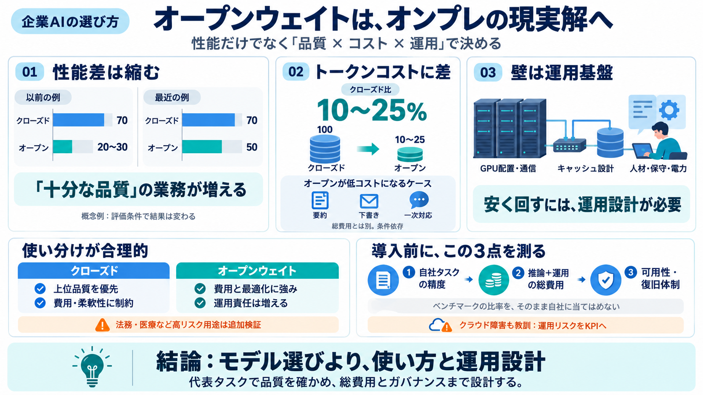

IBM debuts compact z17 mainframes and LinuxONE servers for on-premises enterprise AI - SiliconANGLE
Tarquinio said the company has solved these challenges with some impressive hardware engineering feats. For instance, th…

Tarquinio said the company has solved these challenges with some impressive hardware engineering feats. For instance, th…
News Jul 23, 20265 mins ## AI infrastructure buying shift among customers impacted z17 performance in Q2, but the Big …
Modernizing legacy applications for deployment on cloud or hybrid infrastructure remains a priority for mainframe users.…
ARMONK, N.Y., May 12, 2026 — IBM (NYSE: IBM) today announced two new managed services – Red Hat AI Inference on IBM Clou…
Duane Barnes, president of Raleigh, N.C.-based solution provider and Cox company RapidScale—No. 173 on CRN’s 2026 Soluti…